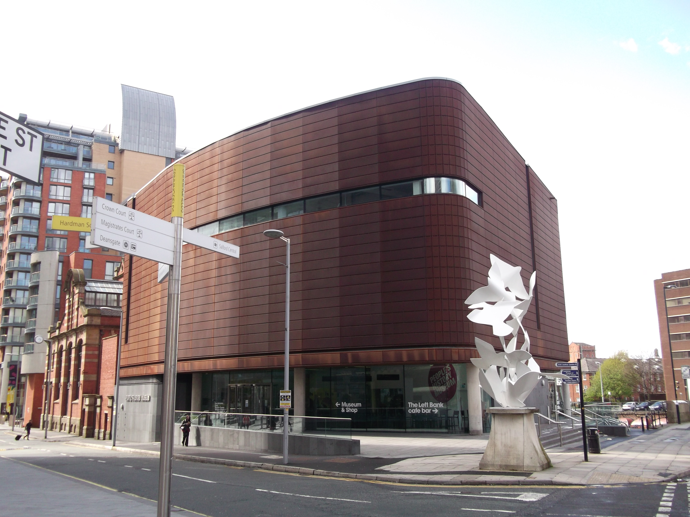

Home Trafford centre Manchester People's Museum Manchester Museum The John Library
Come learn all about people through out the ages and how they've made many advancemnts through out history!

The manchester people's museum can you evrything from the past 400 years! ranging from the politics, laws and social movements that happeneding our country to the struggle for working class political justice! So and see what else the Museum has to offer! The days they're usually open is all week round, 10AM to 5PM!
For more information, click the link below!